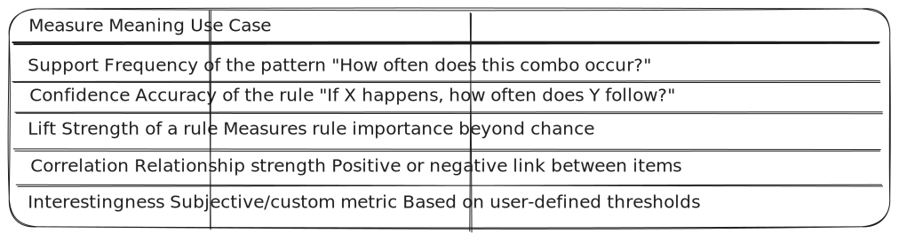

Introduction to Data Mining
|
├── 1. Basic Concepts of Data Mining
│ ├── What is Data Mining?
│ ├── Knowledge Discovery in Databases (KDD) vs. Data Mining
│ ├── Data Mining Tools and Applications
│
├── 2. Data Mining Primitives
│ ├── Task-Relevant Data
│ ├── Mining Objectives
│ ├── Measures and Identification of Patterns
│
├── 3. Data Mining Query Languages
│ ├── Data Specification
│ ├── Specifying Kind of Knowledge
│ ├── Hierarchy Specification
│ ├── Pattern Presentation and Visualization Specification
│ ├── Data Mining Languages
│ └── Standardization of Data Mining
│
└── 4. Architectures of Data Mining Systems
- When we talk about Data Mining, we're basically talking about digging through huge amounts of data to find useful patterns, trends, or knowledge — sort of like finding gold in a mountain of rocks. This unit sets the stage by introducing you to the core ideas behind data mining and how it fits into the bigger picture of data analysis and business intelligence.
- We begin with the basic concepts, including what data mining really means, how it's different from (yet related to) KDD (Knowledge Discovery in Databases), and where it's used — from market research to fraud detection. Then we move into data mining primitives, which are like building blocks that help define what kind of patterns we want to find, what data is relevant, and how we measure our findings.
- Next, we explore data mining query languages, which allow us to express what kind of patterns we're interested in — whether it’s through specifying data, the kind of knowledge we want, how results should be visualized, or setting up hierarchies and structures. Finally, the unit wraps up with the architecture of data mining systems, explaining how everything works together behind the scenes — from data input to pattern output.
1. Basic Concepts of Data Mining
What is Data Mining?
- Data mining ka matlab hota hai bade data ke pile me se kaam ki cheezein ya hidden patterns dhoondhna. Isse hume numbers ke peeche ka asli scene samajhne mein madad milti hai—jaise trends, similarities, ya koi ajeeb baat jo normal nahi lagti. Ye ek smart tool ki tarah hota hai jo maths aur algorithms ka use karke boring raw data ko useful info mein badal deta hai taaki hum better decisions le sakein.
- Data mining ek smart process hai jisme hum large data sets se useful patterns, relationships, ya unusual behavior nikaalte hain. Isme statistics, machine learning, aur database techniques ka mix use hota hai. Common methods mein classification (data ko group karna), clustering (similar items dhoondhna), regression (values predict karna), aur association rule mining (jaise "X lene wale log aksar Y bhi lete hain") shamil hain.
- Mining start karne se pehle data ko clean aur prepare kiya jaata hai. Phir different algorithms lagaye jaate hain uspar. Ye process baar-baar repeat hota hai—tweaks aur validation ke saath—taaki jo insights milein wo sahi bhi ho aur real life mein kaam bhi aayein.
KDD vs. Data Mining
- Knowledge Discovery in Databases (KDD) ek complete process hai jisme raw data se kaam ki knowledge nikali jaati hai—data prepare karne se lekar pattern ko samajhne tak. Data mining uska ek important part hai jisme algorithms lagake patterns dhoondhe jaate hain prepared data se. KDD ek badi process hai aur data mining uska main step.
- KDD ke main 5 steps hote hain: data selection, preprocessing, transformation, data mining, aur interpretation/evaluation. Pehle hum data choose karte hain, phir usko clean karte hain (missing values hataake, noise hataake), uske baad usko sahi format mein badalte hain. Data mining mein patterns dhoondhe jaate hain, aur last mein results check kiye jaate hain ki wo useful hain ya nahi.
- Data mining mainly algorithms ka part hota hai jisme classification, clustering, association rule mining, aur outlier detection use hote hain. Ye sab transformed data par apply hote hain taaki hidden patterns ya correlations mil sakein. Data mining sirf patterns nikaalta hai, jabki KDD poora pipeline cover karta hai raw data se lekar final useful result tak.
- KDD aur data mining ke beech main differences:
- Scope: KDD poori knowledge extraction process hai, jabki data mining sirf pattern discovery pe focus karta hai
- Input: KDD raw data se shuru hota hai, data mining prepared data pe kaam karta hai
- Output: KDD se actionable knowledge milta hai, data mining se patterns ya models nikalte hain
- Techniques: KDD mein data management aur statistical methods bhi use hote hain, data mining mainly algorithms pe based hota hai
Data Mining Tools
Data mining tools aise software hote hain jo data mining techniques ko easy aur fast banate hain. Ye tools help karte hain data clean karne, algorithms run karne, aur results show karne mein. Kuch common tools ye hain:
- Python/R libraries (jaise scikit-learn, TensorFlow, dplyr) custom algorithms banane ke liye
- Weka: machine learning aur prediction modeling ke liye
- RapidMiner: drag-and-drop style data mining ke liye
- KNIME: visual programming aur analytics ke liye
- SQL-based tools (jaise Microsoft SQL Server Analysis Services) jo databases ke sath directly kaam karte hain
In tools se aap data cleaning, feature selection, model training, aur performance check kar sakte ho. Inme classification, clustering aur association jaise kaafi built-in algorithms hote hain, jisse coding ka kaam kam ho jaata hai.
Applications of Data Mining
Data mining alag-alag areas mein use hoti hai taaki tough problems solve kiye jaa sakein aur processes better ho sakein. Main uses yeh hain:
- Business Intelligence: market basket analysis, customer groups banana, aur churn (customer lose hone) ka prediction
- Healthcare: disease patterns samajhna, drug ki effectiveness dekhna, aur patient risk analyze karna
- Finance: fraud pakadna, credit score banana, aur stock market trends dekhna
- Manufacturing: machines ki maintenance predict karna, quality control aur supply chain better banana
- Research: scientific data ka analysis, hypothesis test karna, aur nayi knowledge nikaalna
In sab mein, data mining techniques purane ya live data ko analyze karke aise insights nikaalte hain jo decision making mein help karte hain. Method ka choice problem ke type pe depend karta hai—labeled data ke liye supervised learning, unlabeled ke liye unsupervised, aur step-by-step decisions ke liye reinforcement learning. Final results ko accuracy, precision ya F1-score jaise metrics se check kiya jaata hai taaki reliable ho.
- Data mining jab big data tools (jaise Hadoop, Spark) ke sath milti hai to bade-bade data sets bhi fast process ho jaate hain. Isse text, images, aur sensor data jaise alag data types ko bhi handle kiya ja sakta hai.
- Data mining ab deep learning aur AutoML ke sath aur smart hoti ja rahi hai—model choose karne aur tuning mein ab zyada manual kaam nahi karna padta. Lekin data privacy, algorithm bias, aur explain kar paana ab bhi important challenges hain.
2. Data Mining Query Languages (DMQLs)
What Are Data Mining Query Languages?
Chalo ek simple sawaal se shuru karte hain:
Aap data mining system se baat kaise karoge? Kaise bataoge ki kaunsa pattern dhoondhna hai?
Jaise hum databases se baat karne ke liye SQL use karte hain, waise hi data mining systems se baat karne ke liye Data Mining Query Languages (DMQLs) use hoti hain. Ye ek proper way deti hain yeh batane ke liye ki:
- Kaunsa data analyze karna hai
- Kaunsa pattern dhoondhna hai
- Agar koi hierarchy ya levels hain to wo kya hain
- Results kaise dikhne chahiye
DMQLs help karti hain raw data ko samajhne layak knowledge mein badalne mein.
Components of Data Mining Query Languages
1. Data Specification
Iska matlab: Aapko batana hota hai ki kaunsa dataset, kaunsi table ya kaunsi columns pe aapko data mining karni hai.
Example (technical):
USE sales_data;
SELECT * FROM transactions
WHERE region = 'North';
Iska importance: Ho sakta hai aapke paas 50 tables ho, lekin aap sirf North region ke transactions pe kaam karna chahte ho. Toh ye step help karta hai exact data filter karne mein.
2. Specifying Kind of Knowledge to Be Mined
Iska matlab: Aapko define karna hota hai ki aapko kis type ka pattern ya knowledge chahiye. Ye ho sakta hai:

Example (DMQL-style):
MINE CLASSIFICATION_RULES
FROM customer_data
FOR customer_type
BASED ON age, income, location;
3. Hierarchy Specification
Iska matlab: Jab aapke data mein multiple levels ya hierarchy ho (jaise city, state, country), to aap define kar sakte ho ki kis level pe patterns chahiye.
Ye kaafi useful hota hai, jaise:
- Product → Category → Department
- Location → City → State → Country
Aap decide kar sakte ho ki city ke jagah state level pe patterns chahiye.
Example:
DEFINE HIERARCHY location_hierarchy AS
(location < city < state < country);
Ab aap aise queries kar sakte ho:
- "State wise top-selling product categories batao."
4. Pattern Presentation & Visualization Specification
Iska matlab: Aap system ko batate ho ki mined results kaise dikhne chahiye.
Iski zarurat isliye hai kyunki raw results boring ya confusing ho sakte hain. Aap bol sakte ho:
- Rules (jaise "Agar age > 25 hai, to insurance leta hai")
- Tables
- Charts (bar, pie, scatter)
- Decision trees
- Cluster graphs
Example:
SHOW RESULTS AS decision_tree;
Isse decision-makers ke liye results samajhna easy ho jaata hai.
5. Data Mining Languages (Actual DMQL Syntax)
Yeh real language ya syntax hoti hai jisse aap mining queries likhte ho. Kuch common languages hain:

Ek basic DMQL query kuch aise lag sakti hai:
USE sales_data;
MINE association_rules
FROM transactions
FOR item
BASED ON item_list
WITH support ≥ 0.2, confidence ≥ 0.6;
Iska matlab system ko yeh batana ki aise rules dhoondo jisme support aur confidence ki value specified limit se zyada ho.
6. Standardization of Data Mining
Iska matlab: Har tool apna alag syntax use karta hai, jiski wajah se compatibility problems hoti hain.
Goal yeh hai: Ek standard language ya format banana jo sabhi platforms pe kaam kare—jaise SQL har database ke liye standard hai.
Kuch organizations jo is pe kaam karte hain:
- ISO (International Organization for Standardization)
- DMG (Data Mining Group) – Inhone PMML (Predictive Model Markup Language) banaya
- W3C – Data exchange formats ko promote karta hai
Importance: Socho aapne ek model Oracle mein banaya aur usko Python ya Excel mein use karna hai—toh standardization se ye possible hota hai.
3. Data Mining Primitives
First Things First — What Are Data Mining Primitives?
Socho aap pizza order kar rahe ho. Aapko batana padega:
- Kaunsi type ki pizza chahiye
- Kahan deliver karna hai
- Size kya hona chahiye
- Kitna spicy ya cheesy ho
Data mining mein bhi kuch aisa hi hota hai. Aap system ko batate ho ki kaunsa data analyze karna hai, kya dhoondhna hai, aur kaise result judge karna hai. Ye basic instructions hi kehlate hain Data Mining Primitives.
Toh simple words mein:
- Data mining primitives basic blocks hote hain jo help karte hain mining task ko clearly define karne mein.
Ye batate hain ki kya data mine karna hai, kaunsa pattern dhoondhna hai, kaise unhe judge karna hai, aur kaise present karna hai.
Let's Explore Each Part of Data Mining Primitives
1. Task-Relevant Data
Basic Idea:
Iska simple matlab: Hume kaunsa data chahiye?
Har data useful nahi hota. Mining se pehle hume decide karna padta hai ki kaunsi table, columns ya condition lagani hai — jaise sirf 10th class ke students ke marks analyze karna ho.
Technical Explanation:
Task-relevant data ka matlab hota hai data ka wo part jo mining ke liye useful hai. Isme shamil ho sakta hai:
- Khaas table (jaise sales)
- Important columns (jaise product_name, region, revenue)
- Filter lagana (jaise WHERE year = 2024)
Example:
SELECT product_name, region, revenue
FROM sales
WHERE year = 2024;
Yani aap system ko keh rahe ho: "Sirf ye part analyze karo, poora data nahi."
2. Mining Objectives
Basic Idea:
Ab jab hume pata hai kaunsa data dekhna hai, to ab decide karna hai ki us data se kya dhoondhna hai.
Kya aap:
- Similar cheezein group karna chahte ho? (Clustering)
- Kuch predict karna chahte ho? (Classification ya regression)
- Aise patterns dhoondhna chahte ho jaise "jo log X kharidte hain, wo Y bhi lete hain"? (Association rules)
Bas wahi mining objective hota hai.
Technical Explanation:
Mining objective batata hai ki hume kis type ka knowledge chahiye. Example:

Example (DMQL-style):
MINE classification_rules
FROM customer_data
FOR customer_type
BASED ON age, income;
3. Measures and Identification of Patterns
Basic Idea:
Ab pattern mil bhi gaya, to kaise pata chalega ki wo useful hai ya time waste?
Iske liye kuch measures use karte hain — jaise "sirf wahi pattern dikhao jo frequent hai ya jiska confidence zyada hai".
Socho jaise boring memes hata ke sirf spicy wale hi dikhaye jaayein 😄
Technical Explanation:
Data mining mein hum kuch values ya criteria use karte hain jaise:
Example:
- Rule: Agar "milk" leta hai → to "bread" bhi leta hai
- Support = 20%
- Confidence = 80%
- Lift = 1.5
In values se system decide karta hai ki pattern useful hai ya bas noise hai.
4. Architectures of Data Mining Systems
- Socho aaj ke time mein har din billions GB ka data ban raha hai—videos, photos, messages, search queries, online shopping, aur bohot kuch. Ab sawaal ye hai—iss itne saare data mein se hume kaise samajh aaye ki hume kya chahiye? Kaise dhoondein useful cheezein bina confuse hue?
- Yahi pe data mining ka kaam shuru hota hai. Socho jaise ek bada pahaad hai data ka, aur hume usme se chhoti chhoti kaam ki cheezein nikalni hai. Jaise aap Google pe search karte ho “best laptops under ₹50,000”, aur Google turant relevant results dikhata hai. Par yeh sab possible kaise hota hai?
- Yeh koi magic nahi hai—yeh hai data mining ka result! Aur iske peeche ek poora system kaam karta hai—jo data collect karta hai, process karta hai, organise karta hai, aur fir aapko exact result deta hai. Is system ke structure ko hi hum kehte hain architecture of a data mining system.

Data Mining System Architecture Overview
- Data mining system ka architecture alag-alag layers mein divided hota hai, jahan har layer ka apna specific kaam hota hai. Sabse upar hota hai user interface—yahi se user query dalta hai aur result leta hai. Ye interface directly connect karta hai pattern evaluation component se, jo milne wale patterns ko check karta hai ki wo kaam ke hain ya nahi. Ye check knowledge base ke rules ke through hota hai—jo pehle se defined hoti hai.
- Pattern evaluation ke neeche hota hai data mining engine—yeh core part hota hai system ka. Ye algorithms lagata hai data pe taaki patterns, relations ya predictions mil sake. Engine knowledge base se bhi connect hota hai taaki uska kaam aur accurate ho.
- Data mining ke liye jo data chahiye hota hai, wo aata hai database ya data warehouse server se. Yahan pe already structured aur cleaned data stored hota hai. Iske pehle raw data ko clean, integrate aur select kiya jata hai—taaki galat ya extra data remove ho jaye, multiple sources ka data combine ho jaye, aur sirf useful data bache.
- Architecture ke base mein hoti hain data sources, jisme shamil hain:
- Databases jisme operational data hota hai
- Data warehouses jisme purane historical records hote hain
- Internet (World Wide Web) jahan se external data milta hai
- Other sources jaise documents ya logs
- Data in sources se upar ki taraf flow karta hai—pehle clean aur integration layer se guzarta hai, fir database server mein jata hai, aur phir mining engine tak pahuchta hai. Jo patterns milte hain unka evaluation hota hai, fir wo result user tak pohchta hai via interface. Knowledge base evaluation aur mining engine dono ko support karta hai, taaki accurate aur useful results milein.
- Yeh layered design system ko efficient banata hai—data easily handle hota hai, processing fast hoti hai, aur result accurate milte hain. Har component ka ek fix role hota hai, aur milke yeh system raw data ko valuable knowledge mein badal deta hai.